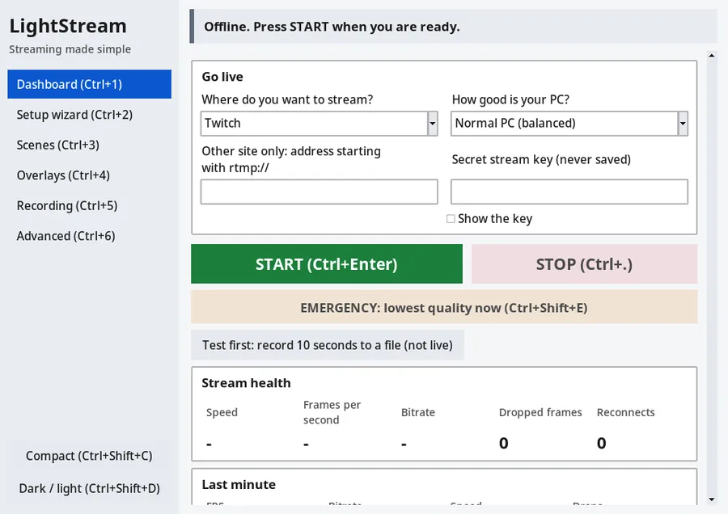
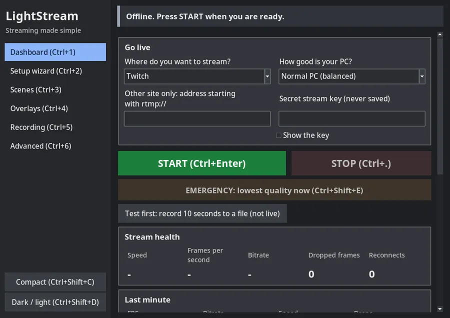
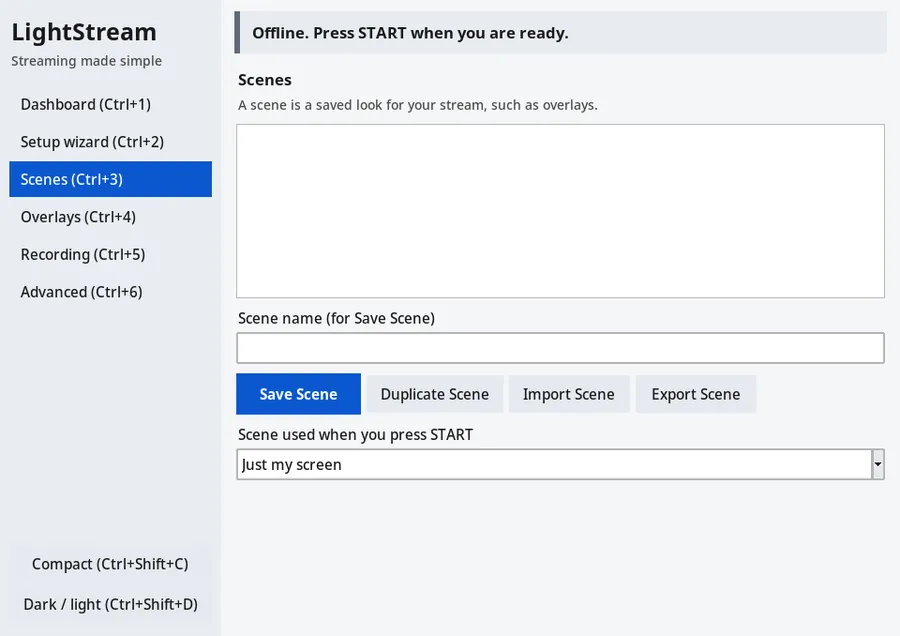

Few moving parts
One app process and one FFmpeg encode. Less running means less for a 10 year old CPU to do.
Stream from an old PC without the lag. A tiny Python tool that drives FFmpeg.
lightstream is a small Python program that starts one FFmpeg process. It adds no browser engine, no plugin system and no background services. Every extra feature is optional and off until you turn it on.
One app process and one FFmpeg encode. Less running means less for a 10 year old CPU to do.
Quick Sync, VAAPI or NVENC are tried before software x264, so the GPU does the encoding when it can.
Profiles for Intel HD and GeForce MX laptops cap presets, buffers and filters to settings that suit them.
This page publishes no benchmark figures. Test on your own PC with the built-in Test button.
The desktop app has a light and a dark theme. Pages are scrollable so they fit small laptop screens.



OBS Studio is a mature, full featured program and the right choice for many streamers. This table lists how the designs differ. It is not a speed test and shows no measurements.
| Design point | lightstream | OBS Studio |
|---|---|---|
| Embedded browser | None. Overlays run in your own browser. | Browser Source is built in and uses an embedded Chromium. |
| Processes | One app process that starts one FFmpeg process. | Main application, plus helper processes when browser sources are used. |
| Encodes | A single encode for the stream. Local recording is optional. | Separate stream and recording encoders are supported. |
| Scope | Focused: screen, webcam, simple scenes, overlays. | Broad: plugins, many sources, advanced mixing. |
| Portability | Portable folder with a portable.flag file. | Has its own portable mode. |
| Dependencies | Python standard library and FFmpeg. | Self contained application. |
Want a chat or goal overlay? Open the companion page in a browser and capture that window with a scene.
The intel_hd_optimized profile is chosen automatically for Intel HD 4000, 520 and 620 graphics. It uses the light preset, a small buffer, a webcam capped at 10 fps, no blur or chroma key, and AI noise suppression off.
h264_qsv) or VAAPI support, then run lightstream doctor to see which encoder is found.Hardware results are UNVERIFIED: the project has not been run on real Intel HD hardware yet.
The mx250_streamer profile is chosen automatically for GeForce MX250 laptops. On laptops that also have Intel graphics (Optimus), the optimus_mx250 profile is chosen instead: it tries Quick Sync first so the idle Intel GPU encodes while the MX250 runs the game, then NVENC (a design choice, UNVERIFIED on real hardware). mx250_streamer alone tries NVENC first, then Quick Sync. Both allow a webcam overlay, record a local copy by default and cap the video bitrate at 4500 kbps unless you set one.
lightstream doctor and confirm h264_nvenc is listed.--res 1920x1080. There is no 1080p preset yet.--no-record if the disk is slow or full.Hardware results are UNVERIFIED: 1080p on an MX250 has not been tested on real hardware.
The companion page shows chat, viewer count, a stream timer and a goal bar. Open it in a browser window and capture that window with a scene, so lightstream never embeds a browser. With no settings it runs in demo mode with sample data.
For Twitch chat add the channel to the address, for example /companion#channel=yourname. Optional viewer counts need a Twitch client ID and token, added after the # as &clientId=...&token=.... They stay in your browser, are never sent to this site, and are never saved. Twitch and YouTube connections are UNVERIFIED (no network in the dev sandbox), and only Twitch is implemented.
Loading presets...
python -m lightstream gui and paste your stream key.Source and releases are on GitHub. Clone the repo or download the zip, then run:
pip install . lightstream gui
For a USB stick, build the portable zip with
python tools/build_portable.py and drop FFmpeg into its ffmpeg folder.
On Windows, python tools/build_windows_portable.py builds a LightStreamPortable folder with an exe (needs PyInstaller; UNVERIFIED here).
The README has the full steps.
This only records to a file on your computer. Browsers cannot stream to Twitch or YouTube, so nothing is uploaded or sent live.